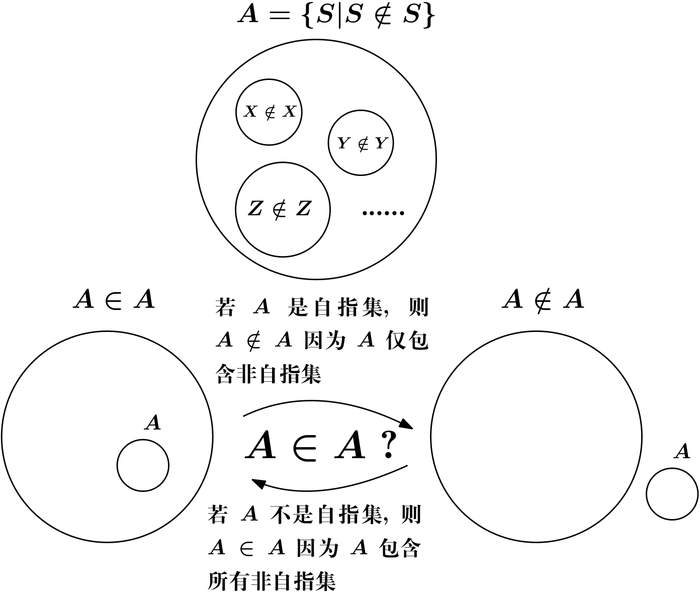

2021-12-20
虽然逻辑是所有学科的基础，但因为其过于基本以及(看似)不证自明的特性阻碍了人们更深入地探索， 直到 19 世纪末 20 世纪初出现了各种悖论
Russell’s paradox (1902) 罗素悖论
不妨称包含自身的集合为自指集合（\(X \in X\)，即集合 \(X\) 也是自身的元素）。
定义 \(A\) 是所有非自指集合组成的集合1，那么究竟 \(A\) 是不是 \(A\) 的元素呢？

Cantor’s paradox (1899) 康托尔悖论
集合 \(Y\) 的基数（cardinal number）\(|Y|\) 是用于衡量该集合大小的 （有限集合的基数就是集合元素的数量，无限集合的基数 \(\aleph_0, \aleph_1, ...\)）， 两个集合基数相同当且仅当它们是等势的（即两者元素有一对一的对应关系）。
定义 \(|Y| \le |Z|\) 为 \(Y\) 与 \(Z\) 的一个子集等势； 定义 \(|Y| < |Z|\) 为 \(|Y| \le |Z|\) 且 \(|Y| \ne |Z|\)； 定义 \(P(Y)\) 是 \(Y\) 的所有子集的集合 （Power Set 幂集）。
令 \(V\) 为所有集合的集合，因此 \(P(V)\) 是 \(V\) 的一个子集， 也因此 \(|P(V)| \le |V|\)；但另一方面，根据康托尔定理 2， \(|V| < |P(V)|\)，得出矛盾。
Burali-Forti’s paradox (1897)
…
为解决这些悖论，不同的数学家以及逻辑学家提出各种方案，例如
罗素的类型论：为了消除自指涉而为每一个对象引入一个非负整数的类型， 当我们说 “x 属于 y” 的时候仅有在 y 的类型比 x 多 1 的时候才有意义
直觉（构造）主义逻辑：不接受排中律作为普遍公理
\[ \forall P, P \vee\neg P \]
例如，\(\neg \forall x, P(x)\) 并不能推出 \(\exists x,\neg P(x)\)， 而必须有有效的方法构造或者找到具体的 \(x\) 才能证明； 因此许多悖论里的那些不受限制的构造物根本构造不出来。
…
无论哪一种方案都好，首先需要检验逻辑语言是用什么样的符号（symbol），构成不同的项（term）， 公式（formula），证明（proof）， 以及选用哪些公理（axiom），推导规则（rules of inference）等；
这是数理逻辑的一个任务，没有这个作为基础，就没有办法去比较这些方案优劣；
经由 Gödel, Tarski, Church, Rosser, Kleene 以及其他许多人投入的努力， 数理逻辑最终获得了成为一门独立数学分支的地位。
朴素集合论允许使用任意性质构建集合而导致悖论，包括康托尔悖论里的所有集合的集合也是↩︎
https://zh.wikipedia.org/wiki/%E5%BA%B7%E6%89%98%E5%B0%94%E5%AE%9A%E7%90%86↩︎